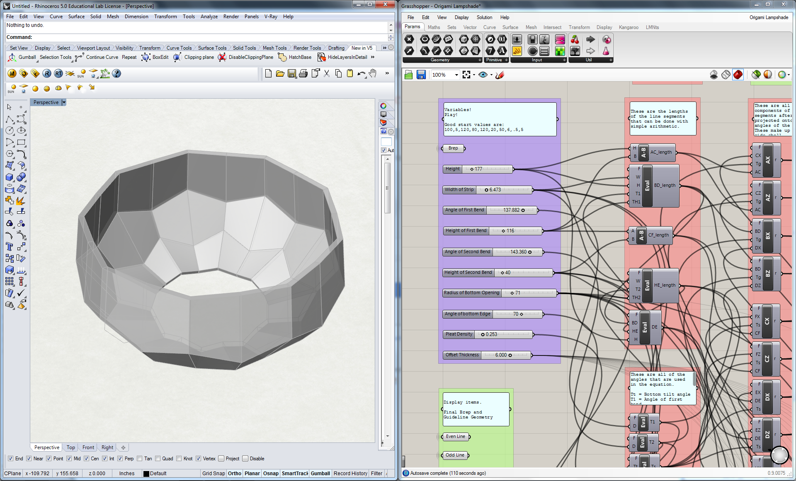

industrial design, parametric modelling, 3D printing
Goal:
Design a line of lighting objects that takes advantage of the affordances of 3D printing.
the generated objects
a small tealight
a small desk lamp
a pendant lamp
In the summer of 2014 I worked at 3D Systems SF. My main project was to develop a series of lighting objects to be printed in a ceramic 3D printer. I developed these designs parametrically through Rhino, Grasshopper, and physical prototyping.
the modelling process
a quick view of what a model looks beside the grasshopper algorithm that defines it.

zooming in on the controls section, where I manipulate the variables that generate the form
another example of what can be created
one more example
These images give a quick overview of what the control system looks like in the Grasshopper script I wrote. The complicated trigonometry happens in the red sections, purple sections are GUI elements, and the green sections are for debugging/explaining what's going on.
the modelling process
overview of the whole script
all the complex math, and the data trees that represent how the data is structured at each step, so that it is easier to understand if newcomers use it.
a view of the user interface, and the labels that explain how (almost) everything work.
After the function worked, I spend some time making the grasshopper file itself easily usable so that future designers at 3DS could use it. All the user has to do is 'bake' the geometry, and it's ready to go.